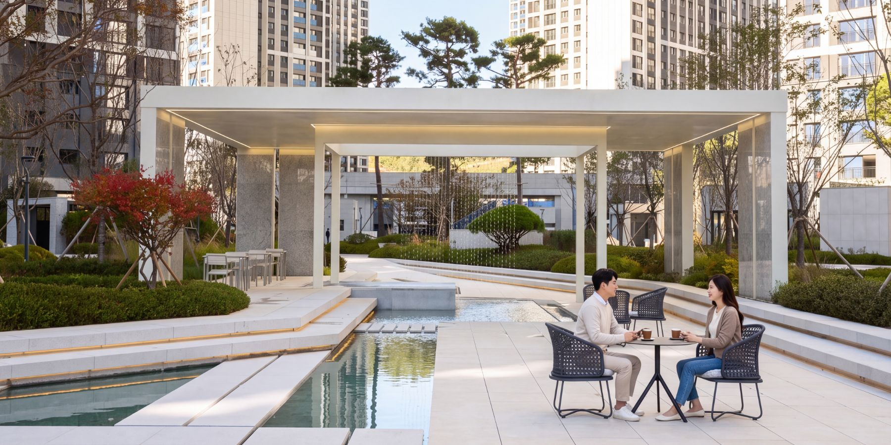

ROUTE.1400m
탁 트인 광장과 청량함이 있는 추천 동선
O오픈뷰 코스|OPENVIEW COURSE

Description
빛과 여유가 머무는 애비뉴밸리에서 투어가 시작됩니다.
애비뉴밸리에서 야외운동시설까지 이어지는 400m의 동선은
탁 트인 개방감과 청량함을 차례로 펼쳐 보입니다.
선큰 구조가 아늑함을 더하는 시그니처 산책로를 지나면
신비로운 해저 탐험의 물놀이터 ‘바다의보석’이 모습을 드러냅니다.
기분 좋은 땀과 정(情)을 나누는 야외운동시설에서
첫 번째 루트가 마무리됩니다.